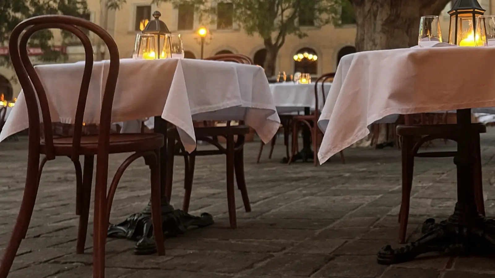
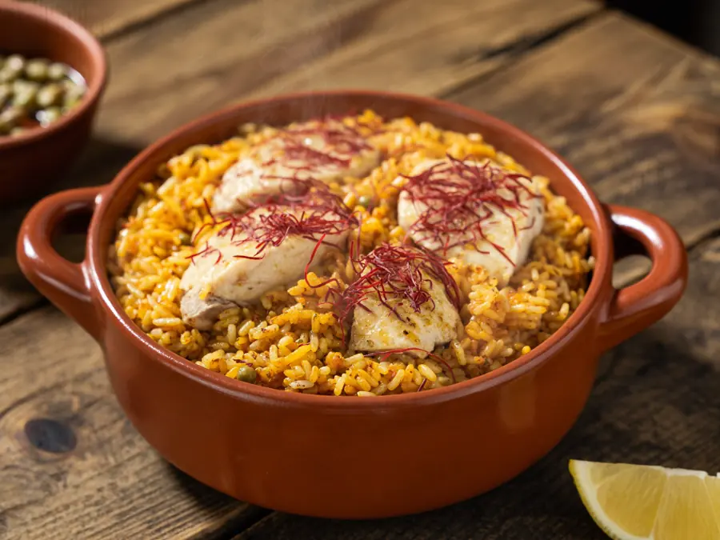
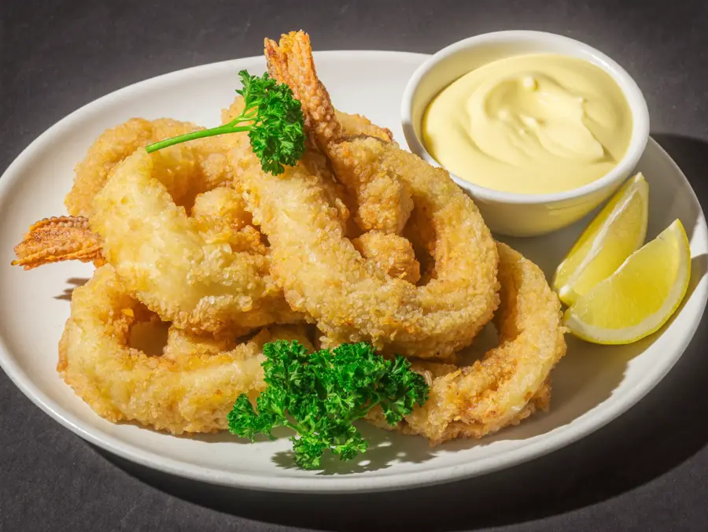

Carrer Mar · Sant Pere Pescador
En el Carrer Mar, a un paso de la muralla. Arroz con azafrán, calamares a la andaluza y croquetas — y una sala donde a la gente le da por acordarse de los nombres.

La casa
La Placeta de la Muralla está en el Carrer Mar, 15, en Sant Pere Pescador. Cocina catalana de la de siempre, con un 8,6 sobre 10 en Guiacat y un precio medio de unos 35 € por persona.
Lo que más repiten los clientes es que los precios están por debajo de lo que la calidad del plato haría esperar. Y cierran los martes, que conviene saberlo antes de plantarse en la puerta.
El equipo
Los clientes los nombran por su nombre en las opiniones, y hablan de su amabilidad y de lo bien que llevan la sala. Que alguien se acuerde de cómo te llamas después de una cena es la mejor reseña que existe — y ahora mismo eso solo lo sabe quien ya ha entrado.
Cocina

De los platos que aparecen citados por su nombre en las opiniones.

Rebozado fino y frito al momento.
Cómo llegar
En el Carrer Mar, 15, en Sant Pere Pescador. Cerramos los martes.
Llamar ahora Abrir en MapsPreguntas frecuentes
Los martes.
El precio medio ronda los 35 € por persona. Lo que más repiten los clientes es que la calidad está por encima de eso.
Cocina catalana. Los platos más nombrados son el arroz con azafrán, los calamares a la andaluza y las croquetas.
En temporada, mejor llamar antes al 972 52 03 71.
En el Carrer Mar, 15, en Sant Pere Pescador.